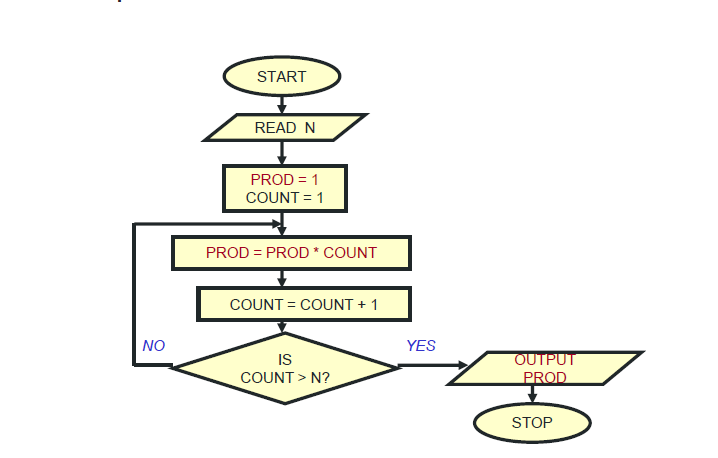
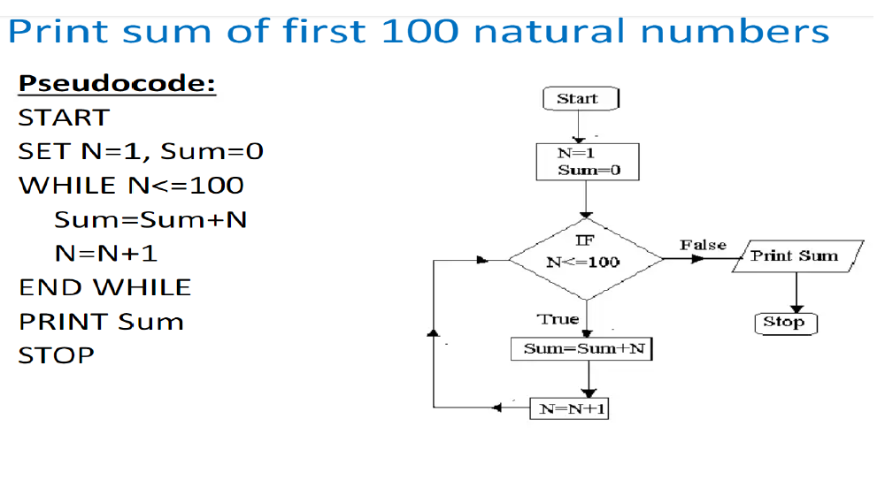

Introduction to Computer Science
Steps Involved in Program Development Cycle
The program development cycle consists of several phases that ensure systematic and error-free development. The main steps are:
- Problem Analysis: Understanding the problem completely and defining the scope.
- Task Analysis: Developing multiple possible solutions and selecting the best one.
- Algorithm Development: Writing step-by-step instructions for the solution.
- Algorithm Testing: Checking if the algorithm gives correct results for different inputs.
- Coding: Converting the algorithm into a programming language.
- Testing and Debugging: Identifying and fixing errors in the program.
- Documentation: Writing explanations and user manuals for future reference.
- Implementation: Running the program in a real environment.
- Maintenance and Enhancement: Updating the program as needed.
Program Development Cycle
1. Problem Analysis
- Analyze the problem in detail to understand requirements.
- Determine the inputs, outputs, and constraints.
2. Task Analysis
- Identify different ways to solve the problem.
- Select the most optimal approach.
3. Algorithm Development
Develop a structured, step-by-step method to solve the problem.
4. Algorithm Testing
Verify the logic of the algorithm with test cases.
5. Coding
Convert the algorithm into a programming language like C, Python, or Java.
6. Testing and Debugging
Check for syntax and logical errors, and fix them.
7. Documentation
Provide written explanations of the program for future reference.
8. Implementation
Deploy the software for actual use.
9. Maintenance and Enhancement
Regularly update the software and improve features.
Pseudocode
Pseudocode is a way of writing algorithms in simple English-like statements.
How to Write Pseudocode?
- Use keywords like
BEGIN, END, IF-ELSE, WHILE, etc.
- Keep it simple and clear.
- Use indentation for clarity.
Pseudocode Syntax
BEGIN
Read number1, number2
sum ← number1 + number2
Print sum
END
Loops in Pseudocode
BEGIN
i ← 1
WHILE i ≤ 10 DO
Print i
i ← i + 1
END WHILE
END
Flowcharts
A flowchart is a visual representation of an algorithm using symbols to show the flow of execution.
Why Use Flowcharts?
- They provide a clear and structured representation of an algorithm.
- Help in debugging by visualizing the logic.
- Make it easier to communicate the design to others.
Common Flowchart Symbols
- Oval: Represents Start or End of the process.
- Parallelogram: Represents Input or Output operations.
- Rectangle: Represents a Process (computation, assignments, etc.).
- Diamond: Represents a Decision (Yes/No, True/False conditions).
- Arrows: Show the direction of flow.
Example: Factorial using Recursion
FUNCTION Factorial(n)
IF n = 0 THEN
RETURN 1
ELSE
RETURN n * Factorial(n-1)
END IF
END FUNCTION
Factorial Without Recursion
BEGIN
Read n
fact ← 1
FOR i FROM 1 TO n DO
fact ← fact * i
END FOR
Print fact
END

Examples of Flowcharts
1. Flowchart to Find the Largest of Three Numbers
2. Flowchart to Print the Sum of First 100 Numbers

3. Flowchart to Add Three Numbers